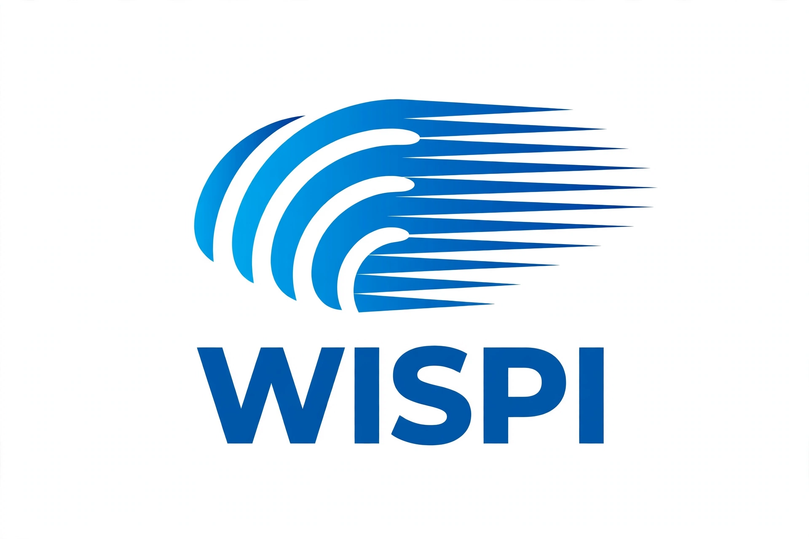
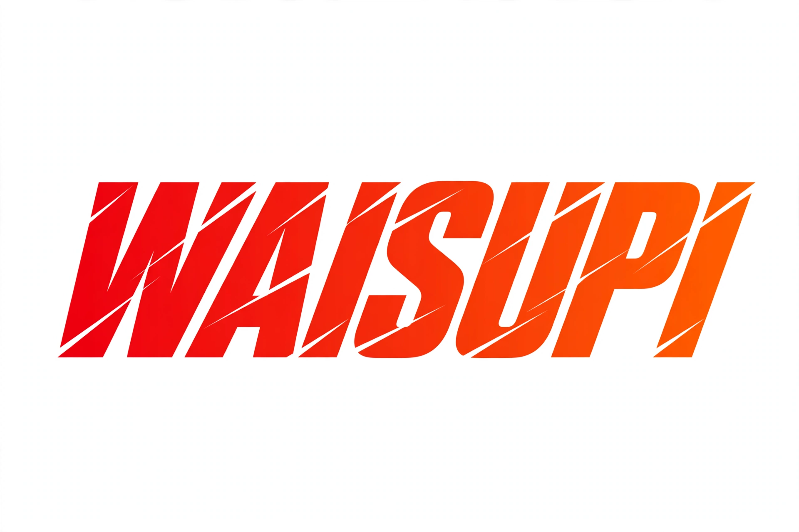
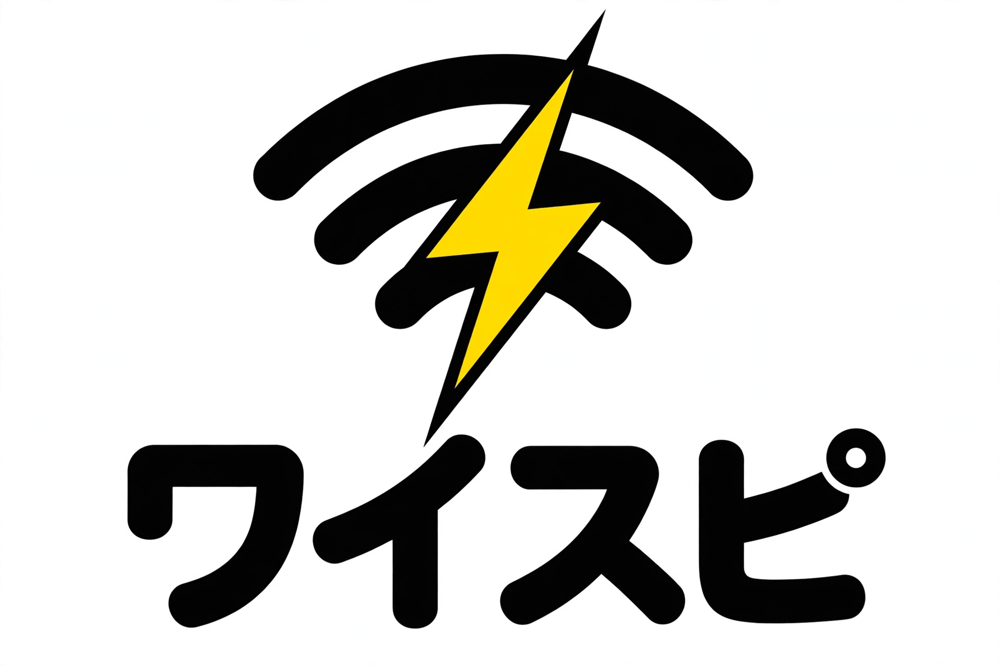
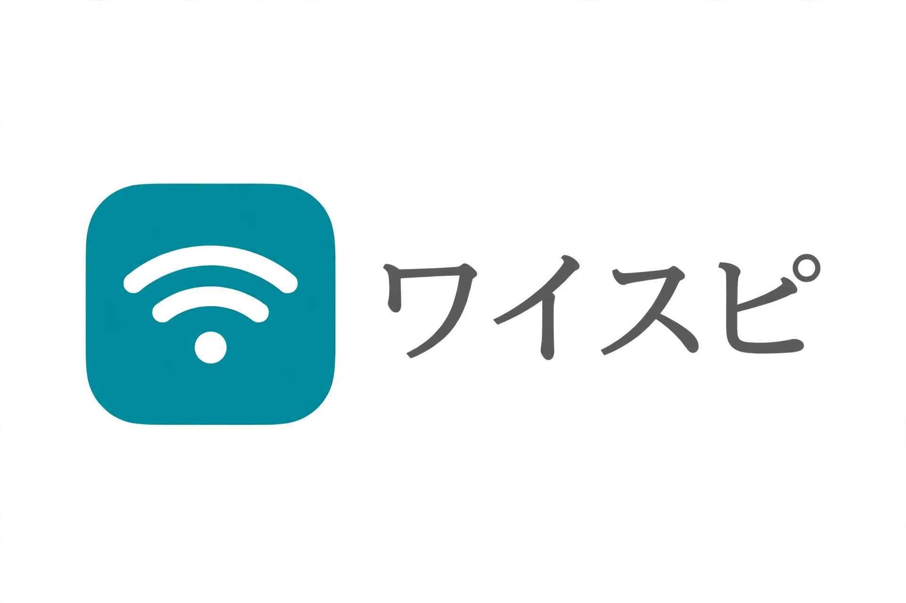
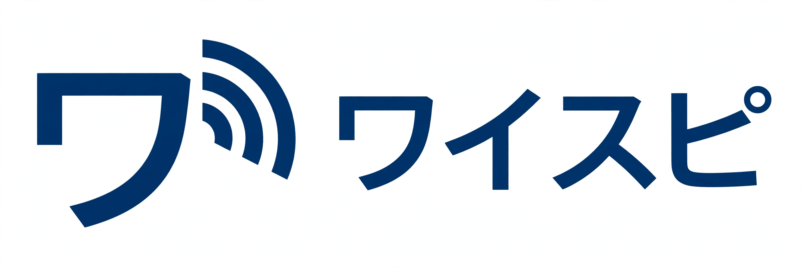
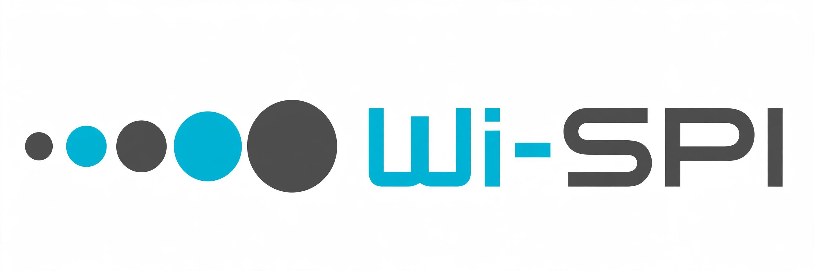
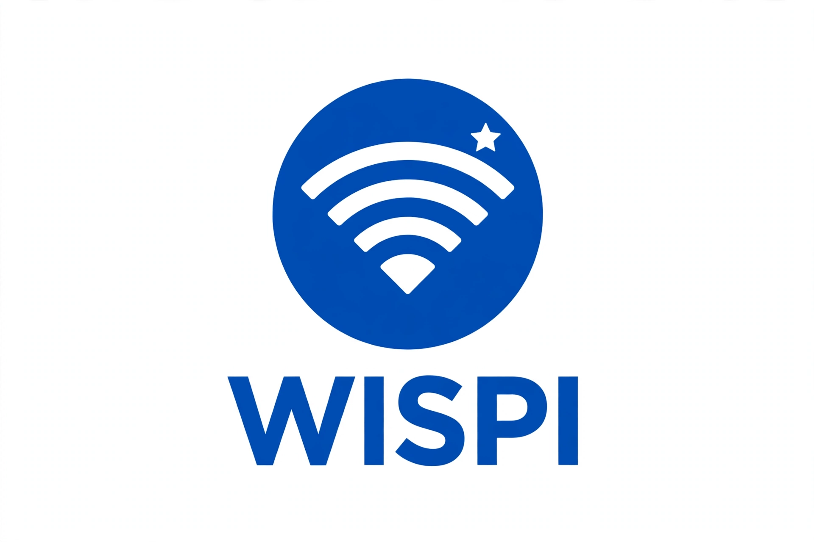
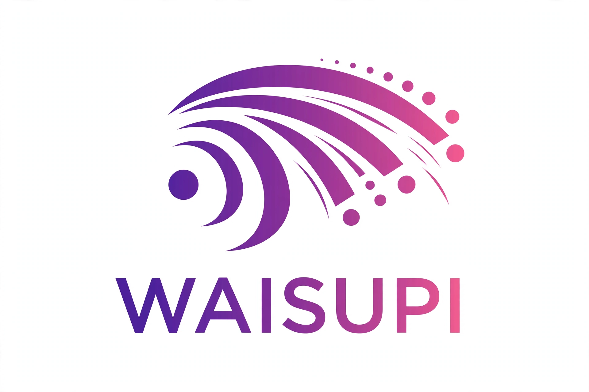
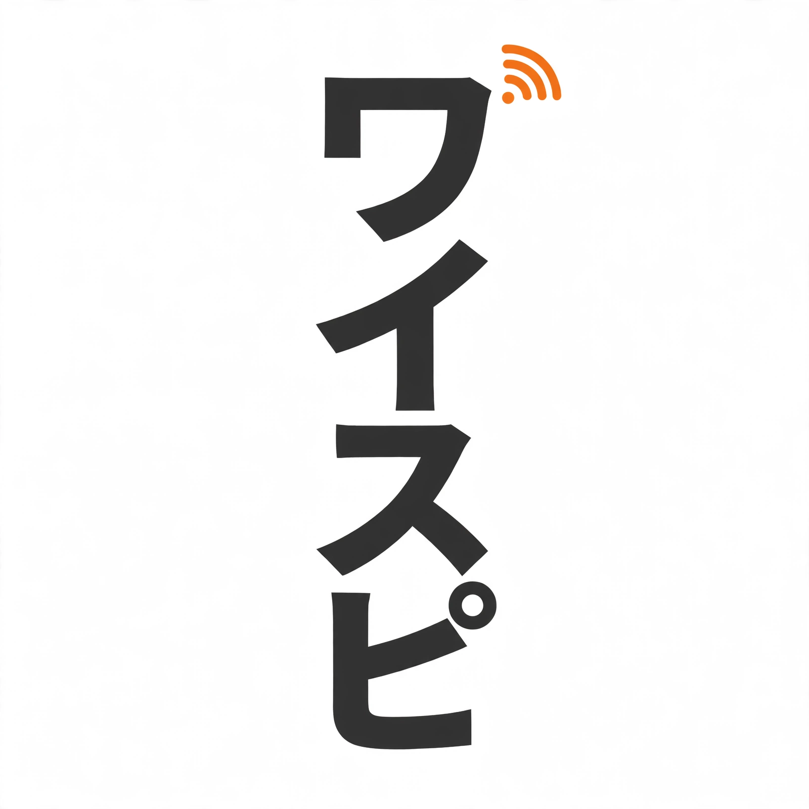

1WISPI／スピード線マーク

表記：ローマ字「WISPI」。モチーフ：Wi-Fiの電波アークが右へ流れるスピード線に変化するマーク。色：ブルー系グラデーション。
2WAISUPI／イタリックタイポ

表記：ローマ字「WAISUPI」。モチーフ：マークなしのタイポ主役。大きく斜めのイタリックにスラッシュの切り込み。色：赤→オレンジのグラデーション。
3ワイスピ／電波×稲妻

表記：カタカナ「ワイスピ」。モチーフ：電波アークと稲妻を融合したマーク＋太めのカタカナ。色：イエロー＋ブラック。
4ワイスピ／ストリートタイポ
表記：カタカナ「ワイスピ」。モチーフ：極太・傾斜・角の効いたストリート感あるタイポに小さな電波ドット。色：黒＋蛍光グリーン。
5ワイスピ／アプリアイコン型

表記：カタカナ「ワイスピ」。モチーフ：角丸四角アイコンに白い電波マーク＋シンプルなゴシック体。色：ティール＋濃いグレー。
6ワイスピ／「ワ」＋電波アーク

表記：カタカナ「ワイスピ」。モチーフ：カタカナ「ワ」の字に電波アークを重ねたマーク＋横組みタイポ。色：ネイビー。
7Wi-SPI／テック・ドット

表記：ローマ字「Wi-SPI」。モチーフ：右へ行くほど大きくなる電波ドット＋モノスペース風フォント。色：シアン＋グレー。
8WISPI／円形バッジ

表記：ローマ字「WISPI」。モチーフ：円形バッジの中に白い電波アークと小さな星、下にタイポ。色：ロイヤルブルー＋白。
9WAISUPI／グラデーション

表記：ローマ字「WAISUPI」。モチーフ：ドットとアークが左から右へ流れて加速するマーク＋モダンなサンセリフ。色：紫→ピンクのグラデーション。
10ワイスピ／縦組み和風

表記：カタカナ「ワイスピ」。モチーフ：太ゴシックの縦組みタイポ、右上に小さな電波マーク。色：オレンジ＋濃いグレー。